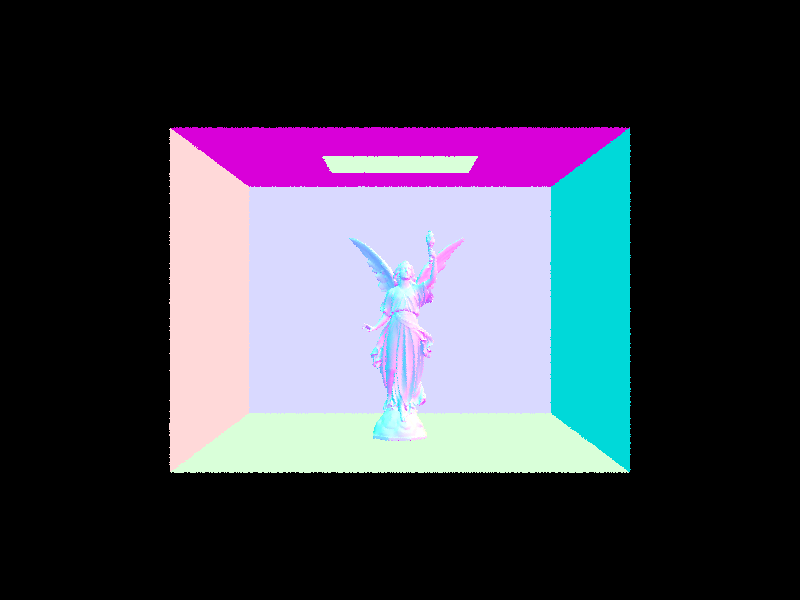

CS184/284A Spring 2025 Homework 3 Write-Up
Link to webpage: https://cal-cs184-student.github.io/hw-webpages-haku-fan-club-writeups/hw3/index.html
Link to GitHub repository: https://github.com/cal-cs184-student/sp25-hw3-haku-fan-club-3
Overview
In this project, we implemented a pathtracer using topics like ray generation, primitive intersection, acceleration structures, global and indirect illumination, and adaptive sampling. We were able to generate images with varying lighting and learned more about how light interacts with objects and the surrounding environment.Part 1: Ray Generation and Scene Intersection
We began with the ray generation step in the rendering pipeline, which generates camera rays pointing towards the scene, intersecting the virtual camera sensor. To implement this, we first transformed the image coordinates to camera space by scaling by 2, translating by (-1, -1), adding the -1 z-value dimension, and finally scaling it by \( (tan (0.5 × hFov), tan (0.5 × vFov), 1) \), resulting in new coordinates on a camera sensor centered at (0, 0, 1) with bottom left corner at \( (-tan (0.5 × hFov), -tan (0.5 × vFov), -1) \) and upper right corner at \( (tan (0.5 × hFov), tan (0.5 × vFov), -1) \). A visual diagram of this is shown below. Now, we know that the ray origin is (0, 0, 0), and the direction is the point on the camera sensor we just calculated (normalized). We transform both of these values from camera space into world space and generate the ray with these values, as the final generated ray should be in world space. We also setmin_t and max_t to nclip and fclip, respectively, so that we only consider points within the clipping
plane. Conceptually, what ray generation is doing is determining the what objects appear and the amount of radiance at every point to render in the final image.

Then, we implemented with the primitive intersection step in the rendering pipeline. Given a ray and a primitive, such as a triangle or a sphere, we could use the ray equation \(r(t) = o + td\), where \(o\) is the origin, \(t\) is the time, and \(d\) is the unit direction of the ray. By solving for the intersection of a sphere with \((o + td - c)^2 - R^2 = 0\), we can find the time that the ray interesects the shape and use this to find the interesection point (derivation and diagram below). If there is more than one valid intersecion, we choose the one that first occurs. In our implementation, an intersection is only valid if its between
min_t and max_t and updates max_t to be the nearest intersection
to ignore future intersections that are farther away.
|
|

|
A similar method can be used for ray-triangle intersection, but in our implementation, we used the Möller-Trumbore algorithm to avoid having to calculate the plane equation and to skip to directly finding the time of intersection as well as the barycentric coordinates. The full algorithm and components are shown below. We first calculated 2 edge vectors \(E_1\) and \(E_2\) pointing from \(P_0\) to the other 2 vertices. We then calculated a vector \(S\) pointing from \(P_0\) to the ray's origin. After this, we calculated vectors \(S_1\) and \(S_2\), which are the cross products of \(D\) and \(E_2\), and \(S\) and \(E_1\) respectively. Finally, to get the vector \([t, b_1, b_2]\), we divide \([S_2⋅E_2, S_1 ⋅ S, S_2 ⋅ D]\) by \(S_1 ⋅ E_1\). Even though the algorithm only gives us 2 barycentric coordinates, \(b_1\) and \(b_2\), we can use the property that barycentric coordinates sum to 1 to derive the last coordinate. We then check the validity of the intersection using the barycentric coordinates (they should all be between 0 and 1 inclusive and sum up to 1) as well as if the computed time is within the range of
min_t and max_t, updating max_t if it is valid. Our final intersection
point is \((1 - b_1 - b_2)P_0 + b_1P_1 + b_2P_2\).
Images with normal shading for a few small .dae files after implementing ray generation & primitive intersection:

|

|
|
Part 2: Bounding Volume Hierarchy
Here is our BVH construction algorithm:
The starter code expands a starting bounding box, bbox, to fit all the primitives that are given as input. If this number is less than or equal to max_leaf_size, then all we need to do is create a leaf node. So we build a BVHNode with its bounding box set to bbox, set its pointers to left and right children to null pointers and return this node!
Otherwise, this node is not a leaf node because we have too many primitives. We’ll still set this node’s bounding box to bbox. Then, we find which axis bbox takes up the most space in, in other words, the axis in which its extent is the greatest. Choosing the axis with the greatest extent makes sense because we expect the objects inside to be more spread out within, which generally leads to balanced branches, which is good for runtime.
To actually split the bbox on this axis, we chose to use the midpoint heuristic. The midpoint heuristic is good because in practice, we expect roughly half of the primitives to lie on each side of the midpoint (if there is some approximately uniform distribution).
We use the midpoint to split the groups into a left and a right partition. The left partition consists of primitives with bounding box centroids less than the midpoint on the earlier found axis. Since the given list isn’t necessarily sorted by our chosen axis, to actually partition out the primitives, we simply iterate through the given list of primitives and modify the list in-place. We swap any primitive at our current partition index, and increment the index until we’ve gone through the entire list. The result is that all the primitives in the left partition are located in the original list, indexed from [start, partition), while the right partition is located at [partition, end).
However, one fault of the median heuristic point is that it is entirely possible that all primitives lie on one side of the midpoint. And in this case, this means nothing has been partitioned! When we make further recursive calls, it’ll therefore be on the same list of primitives, with the same longest axis, and we end up stuck in an infinite loop.
Thus our solution is to check for this condition, and if it’s true, force partition point to be the middle primitive (middle meaning index-wise). The downside of this heuristic is that it doesn’t take into account the positions of the primitives’ bounding boxes, but at least we are guaranteed to prevent the infinite loop from occuring!
Images with normal shading for a few large .dae files made renderable via BVH acceleration:
|
|

|
|
Comparing rendering times of scenes with moderately complex geometries with and without BVH acceleration:
|
|
|
|
|
|
|
|
|
As expected, with or without BVH acceleration, we get the same rendering of the images. However, there is a significant difference in performance. We can take an example of a relatively simpler scene, cow.dae with 5,856 primitives. With BVH acceleration, it took 0.1128 seconds to render, compared to 8.4320 seconds without.
Another example is beast.dae , which is a more complex scene with 64,618 primitives. Rendering time was 0.0365 seconds with BVH acceleration (even less than it did for cow.dae !), and 172.4064 seconds without.
A much larger scene was CBlucy.dae with 133.796 primtitives. Though it technically can be rendered with BVH acceleration, the time it takes is far longer, from 0.1265 seconds to render with BVH accleration, and 480.4 seconds without. In each of these examples, it took a very short amount of time to also do the work of building the BVH tree (respectively for the 3 .dae files, it was 0.0138, 0.0010 0.0378 seconds). Clearly from all of these examples, it can be seen how efficient BVH acceleration can be when rendering scenes with moderately complex, and very complex geometries. But in addition from just looking at time saved, we can also examine the boost in another important metric. For example, for CBlucy.dae , BVH acceleration cut the average number of intersection tests per ray from about 49,348 to 12.69, which is an incredible improvement.
Part 3: Direct Illumination
In this part, we implemented direct lighting 2 different ways, through uniform hemispehere sampling and by importance sampling lights.- Uniform hemisphere sampling: For this method, we randomly sampled directions in the hemisphere around the surface normal. First, we made a coordinate system for a hit point
with the surface normal aligned with the Z direction. Then, we used the given
hemisphereSampler->get_sample()method to generatenum_samplesdirections and transformed them to world space, storing them in thew_in_worldvector. For each sampled direction, we generated a shadow ray from the hit point with the direction being the transformed sampled direction,w_in_world. For every ray, we setmin_ttoEPS_F, an epsilon constant that can be used to avoid numerical precision issues and self-intersection. We then usedbvh->intersectto check if the shadow ray intersects a light source. If so, we computed the emission by callingray_int.bsdf->get_emission(), whereray_intis where the ray intersects the light. We also evaluated the BSDF functionf(w_out, w_in_object)for the incoming and outgoing directions. Finally, we used the reflectance equation, adding(ray_emission * cos_theta * bsdf_sample * 2.0 * M_PI)/(num_samples)to our total sum of lighting for every sample.cos_thetais the dot product of the normal of the given intersection andw_in_world. We multiply by \(2π\) because the pdf of uniformly sampling across a hemisphere is \((1 / 2π)\). - Importance sampling lights: For this method, instead of randomly sampling in the hemisphere, we focus on sampling from the light sources. For every scene light, we sampled once if its a point light and
ns_area_lighttimes otherwise. Then, for each sample, we usedsample_L(hit_p, &w_in_world, &distToLight, &pdf)to sample the light. The method returns the emitted radianceL_i, writes the sampled direction betweenhit_pand the light source towi, the distance betweenhit_pand the light source in thewidirection todistToLight, and the value of the pdf evaluated at thewidirection topdf. We then transformed the sampled direction to object space, stored inw_in_object. After this, we generated a shadow ray withhit_pandw_in_world, setting themin_tandmax_tvalues toEPS_FanddistToLight - EPS_Frespectively to avoid intersecting with the light itself. Then, we checked if there aren't any other objects between the hit point and the light source by using thebvh->intersectmethod. If this was the case, we evaluated the BSDF functionf(w_out, w_in_object)and plugged this value into the sum of direct lighting, which is(L_i * cos_theta * bsdf_sample)/(pdf * num_samples), wherecos_thetais the dot product of the normal of the given intersection andw_in_world.
Some images rendered with both implementations of the direct lighting function:

|

dragon.dae |

wall-e.dae |
Light sampling (1 sample per pixel) rendered with different amount of light rays:
|
|
|

|

|
With uniform hemisphere sampling, the sample directions are very random, with a lot of them not even hitting a light source and thus not contributing at all to total direct lighting. This means that many of the samples are wasted, and there is much more noise and variance in the result compared to light sampling. Especially in scenes with very few light sources, the chance of a random sample direction hitting a light source is extremely low, meaning that uniform sampling is more inefficient, requiring a lot more samples to converge. For light sampling, since we focus specifically on the light sources, calculating total direct lighting is more deliberate and much faster, which causes the image to render quicker and more accurately and reduces noise in the results.
Part 4: Global Illumination
Here is how we implemented our indirect lighting function:
We implemented the function at_least_one_bounce_radiance , which recursively calls upon itself to simulate multiple light bounces. First we check if the depth of our given ray is at 0. If so, there can be no more calls and we just return 0, for there will be no illumination to be returned. Else, we know there’s still at least a bounce to be made. Moving on, our next step was similar to the direct lighting functions, and we made a coordinate system for a hit point with the normal aligned with the Z direction. If it happened that the ray’s depth was 1, or isAccumBounces = true , we know that we should compute the direct lighting at this bounce, and we set the outgoing illumination, L_out to the output of one_bounce_radiance . This is because we are either at the very last bounce, thus we want the one-bounce radiance, or because we want this quantity since we’re accumulating radiance from all bounces anyways.
If it happens that the ray’s depth is greater than 1, then we must keep recursing. Here is where Russian Roulette gets introduced. We continue recursing with a probability equal to continuation_prob = 0.65 , which we defined based on advice from the homework spec. However, if the current ray’s depth is also equal to the maximum ray depth, we know we must continue on with the function so the ray can take the first bounce no matter what the probabilistic outcome from earlier was.
We then sample the current amount of light based on our value of w_in_world, which we feed into our isect’s BSDF’s sample_f function. We generate a sample ray based on the world coordinates and hit point, making sure to set the new ray’s depth by the current ray’s depth - 1, as we’ve already used up a bounce. We now find ourselves with two different outcomes, but only if we weren’t stopped by Russian Roulette from earlier, and if our BVH actually intersects this sample_ray (since we need a valid intersection to continue).
- If we allow for accumulated bounces, or this sample ray has depth 0, then we’ll compute the sampled amount of light multiplied by
at_least_one_bounce_radiancerecursively called onsample_ray. We’ll have to “normalize” this quantity by multiplying by the dot product between the normal vector andw_in_worldto account for light hitting the surface at an angle, divide by pdf, and multiply by the continuation_probability in order to keep this estimator unbiased. We then add this quantity toL_out, because this is the illumination from the consequent bounces that we want to accumulate together. - Else, we don’t allow for accumulated bounces. In this case, instead of adding the above quantity to
L_out, we directly setL_outto that quantity. This is because we want the radiance solely from the last bounce.
Finally, we return whatever L_out, the outgoing illuminance is. This is how much light is coming from at_least_one_bounce_radiance from the given ray and intersection.
Examples of images rendered with global (direct and indirect) illumination with 1024 samples per pixel:
blob.dae rendered with global illumination |
CBspheres_lambertian.dae rendered with global illumination |
CBbunny.dae rendered with global illumination |
Now let's look at the
CBbunny.dae scene by comparing views with only direct vs indirect illumination, with 1024 samples per pixel for each image.
Notice how one key difference is that in the indirectly illuminated image, the scene light is black. This is because the only light in this scene on any given surface must
have first originated via another surface via bounces. Additionally, this image is much softer.
The directly illuminated image has much more stronger shadows, because every part of the image that does not get directly hit by the scene light is black. Thus in contrast, we observe
a black ceiling, as well as the bunny's underside and shadow being much more darker and contrasting.
CBbunny.daewith direct illumination only |
CBbunny.dae with indirect illumination only |
Now, for
CBbunny.dae, let's render images for different values of m from 0-5. We use 1024 samples per pixel.
First, let's examine the first row, where isAccumBounces is set to false. As m increases, our images get dimmer, as we examine latter bounces of light. The light source appears completely black (except when m=0).
Comparing the cases when m=2 to m = 3, we can see that m=3 is much more dimmer. Notice that the lights that are on the wall the bunny is in front of, have the effect of to decreasing the overall shadows between the ceilings in the walls, and this result can be
observed when isAccumBounces is true, and m = 3, where we observe softer shadows near the ceiling in contrast to lower m values. The overall effect of the individual 2nd and 3rd bounces when combined with previous bounces of light work together to create
a much more realistic image, one that rasterization, which relies on optimizations and other poorer approximations, cannot produce, at least as realistically.
m = 0, isAccumBounces = false |
m = 1, isAccumBounces = false |
m = 2, isAccumBounces = false |
m = 3, isAccumBounces = false |
m = 4, isAccumBounces = false |
m = 5, isAccumBounces = false |
m = 0, isAccumBounces = true |
m = 1, isAccumBounces = true |
m = 2, isAccumBounces = true |
m = 3, isAccumBounces = true |
m = 4, isAccumBounces = true |
m = 5, isAccumBounces = true |
Now, let's look at how our renders for
CBbunny.dae look when Russian Roulette (with a continuation probability of 0.65) is added. We try different values of m, and 1024 samples per pixel:
m = 0 |
m = 1 |
m = 2 |
m = 3 |
m = 4 |

m = 5 |
m = 100 |
Finally, let's look at the
CBbunny.dae scene, and compare how the render views differ when we use different sample-per-pixel rates and 4 light rays. As can be seen from the images below,
as sample-per-pixel rate increases, the images become much less grainy, and the shadows of the whole image become smoother. Though we can always distinguish the bunny and the general scene, a larger sample-per-pixel rate
yields smoother, less noisy/grainy and an overall more accurate rendering of our scene.
1 sample per pixel |
2 samples per pixel |
4 samples per pixel |
8 samples per pixel |
16 samples per pixel |
64 samples per pixel |
1024 samples per pixel |
Part 5: Adaptive Sampling
With adaptive sampling, we dynamically determine the number of samples every pixel based on a statistical calculation of how many samples it takes to converge, which avoids unnecessarily using a high number of samples for pixels that don't require many samples to converge and reduce noise. By focusing more effort on noisy areas that require more samples and avoiding unnecessary extra work on less difficult parts of the images, adaptive sampling helps improve the overall performance of the rendering.To implement this, as we traced ray samples through a pixel using
generate_ray, we decided if the pixel had converged by calculating the value \(I = 1.96 * σ / √n\), where \(n\) is the number of samples, and
\(σ\) is the standard deviation of the samples. In our code, we kept track of 2 variables s1 and s2, where s1 is the sum of all the samples' illuminance values,
and s2 is the sum of all the samples' illuminance^2 values. With these values, we can calculate \(σ^2 = 1/(n-1) * (s_2 - s_1^2/n)\) and \(μ = s_1/n\). Using these, we find \(I = 1.96 * σ / √n\), as mentioned earlier. The smaller the value of \(I\) is, the more confident that we can be that the sample has converged. Thus, we set a maxTolerance variable to 0.05 for a 95% confidence interval and check if
\(I ≤ maxTolerance * μ\), where \(μ\) is the mean of the samples. If so, we can be 95% confident that the sample has converged and terminate the sampling for that pixel. Otherwise, we continue sampling. Also, to avoid calculating
the statistical values too frequently, we set a variable samplesPerBatch (default 32 samples), which only checks if a pixel has converged every samplesPerBatch samples.
Scene renderings with their sampling rates (2048 samples per pixel, 1 sample per light, max ray depth of 5):
|
|
|
|
|